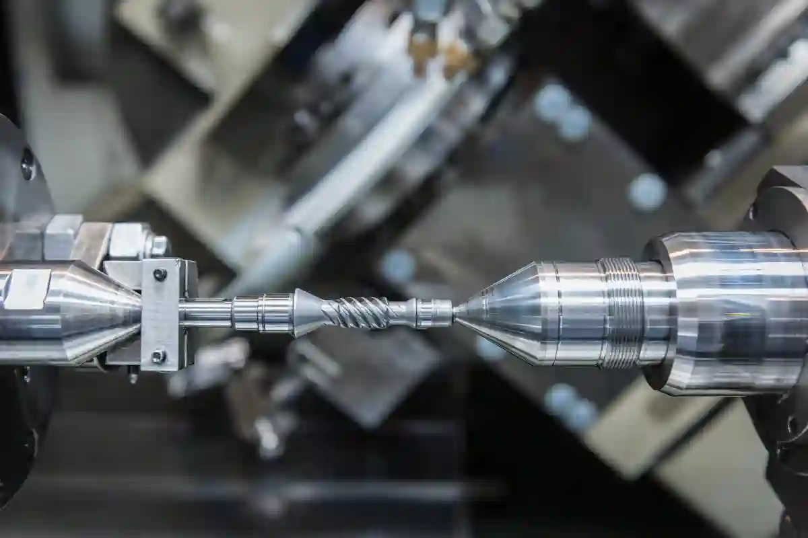
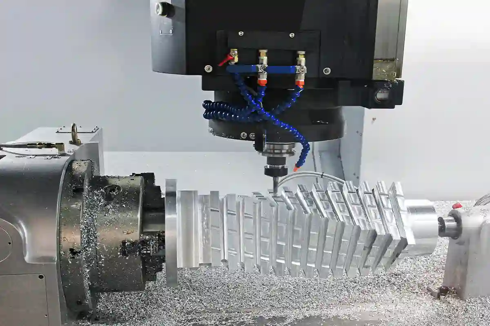
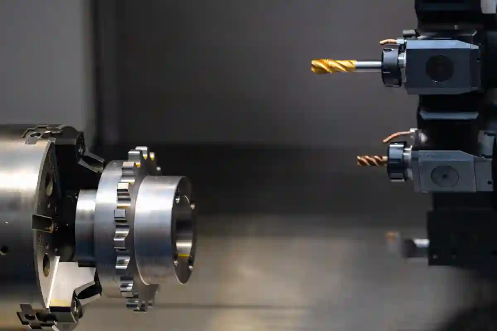

CNC İşleme Yöntemleri – CNC İşleme Neden Modern İmalatın Temelidir?
Endüstriyel üretimde kalite, hız ve ölçüsel doğruluk beklentileri arttıkça cnc işleme yöntemleri, modern imalatın vazgeçilmez bir parçası hâline gelmiştir. Bilgisayar kontrollü bu üretim yaklaşımı, manuel yöntemlerle elde edilmesi zor olan karmaşık geometrilerin yüksek hassasiyetle ve tekrarlanabilir şekilde üretilmesini mümkün kılar. Günümüzde otomotivden savunma sanayiine, medikal ekipmanlardan makine imalatına kadar birçok sektörde cnc talaşlı imalat yöntemleri tercih edilmekte, bu sayede üretim süreçleri daha kontrollü ve verimli hâle gelmektedir.
CNC teknolojilerinin sunduğu esneklik, farklı parça tipleri için çeşitli cnc işleme çeşitlerinin geliştirilmesini sağlamıştır. Tornalama, frezeleme ve çok eksenli işleme gibi yöntemler; parça geometrisine, tolerans gereksinimine ve üretim adedine göre seçilir. Bu noktada cnc işleme teknikleri, yalnızca makine kabiliyetiyle değil, doğru proses planlamasıyla anlam kazanır. Özellikle dar toleranslı ve kritik parçaların üretiminde hassas cnc işleme yaklaşımı, ürün performansı ve güvenilirliği açısından belirleyici rol oynar. Bu rehberde, CNC ile parça üretiminde kullanılan yöntemler teknik ama anlaşılır bir dille ele alınarak, doğru üretim stratejisinin nasıl belirleneceği detaylı biçimde açıklanmaktadır.
Üretim altyapısının genel çerçevesi için: CNC Üretim Teknolojileri blog kategorisini incelemenizi tavsiye ederiz.
CNC İşleme Yöntemleri Neden Endüstriyel Üretimin Temelidir?
Modern imalat dünyasında kalite, süreklilik ve ölçüsel doğruluk artık rekabet avantajı değil, doğrudan bir gerekliliktir. Bu gerekliliklerin tamamını aynı anda karşılayabilen üretim yaklaşımı ise cnc işleme yöntemleridir. Bilgisayar kontrollü sistemler sayesinde üretim süreçleri insan hatasından arındırılırken, karmaşık geometriler yüksek hassasiyetle tekrarlanabilir hâle gelir.
Geleneksel üretim tekniklerinde ustalık ve deneyim ön plandayken, CNC tabanlı üretimde proses kontrolü, mühendislik hesapları ve veri temelli üretim yaklaşımı öne çıkar. Bu durum özellikle seri üretim yapan firmalar için kalite standardizasyonunu mümkün kılar. Bu nedenle otomotivden savunma sanayiine, medikal ekipmanlardan enerji sektörüne kadar pek çok alanda cnc ile parça işleme tercih edilmektedir.
CNC teknolojilerinin sunduğu bu yapı, yalnızca üretim hızını artırmakla kalmaz; aynı zamanda ürün güvenilirliğini ve ölçüsel tutarlılığı da garanti altına alır. Talaşlı üretimin temelleri için: CNC Talaşlı İmalat Nedir? Manuel Üretimden Farkları blog yazımızı okuyabilirsiniz.
CNC İşleme Nedir? Temel Kavramların Doğru Tanımlanması
CNC, “Computer Numerical Control” ifadesinin kısaltmasıdır ve üretim makinelerinin bilgisayar komutlarıyla kontrol edilmesini ifade eder. Ancak pratikte CNC işleme, tek başına bir makine hareketi değil; tasarımdan üretime kadar uzanan entegre bir süreçtir.
Bu süreç genellikle CAD ortamında hazırlanan üç boyutlu model ile başlar. Ardından CAM yazılımları kullanılarak takım yolları, kesme derinlikleri ve ilerleme hızları belirlenir. Son aşamada ise bu veriler CNC tezgâhına aktarılır. Bu noktada devreye cnc işleme teknikleri girer ve üretimin başarısını doğrudan belirler.
Yanlış belirlenmiş bir işleme stratejisi; yüzey kalitesinin düşmesine, tolerans hatalarına veya takım ömrünün kısalmasına neden olabilir. Bu nedenle CNC işleme, yalnızca makine kullanımı değil; aynı zamanda ciddi bir mühendislik disiplinidir. Uluslararası ISO Standartları için ISO – International Organization for Standardization web sitesini ziyaret etmenizi öneririz.
CNC Talaşlı İmalat Yöntemleri ile CNC İşleme Arasındaki İlişki
Endüstride CNC denildiğinde çoğunlukla cnc talaşlı imalat yöntemleri kastedilir. Bunun temel nedeni, CNC teknolojilerinin büyük bölümünün talaş kaldırma prensibiyle çalışmasıdır. Talaşlı imalatta, kesici takım kontrollü biçimde iş parçasından malzeme kaldırır ve istenen geometri elde edilir.
Ancak her talaşlı imalat yöntemi CNC değildir. CNC’yi ayıran temel fark; hareketlerin manuel değil, dijital komutlarla ve tekrarlanabilir şekilde gerçekleştirilmesidir. Bu yapı sayesinde ölçüsel sapmalar minimize edilir ve seri üretimde kalite korunur.
Bu bağlamda CNC işleme, talaşlı imalatın en gelişmiş ve en kontrollü formu olarak değerlendirilebilir.
CNC İşleme Yöntemlerinin Genel Sınıflandırılması
Endüstride kullanılan cnc işleme çeşitleri, tek tip değildir. Parça geometrisi, malzeme yapısı, üretim adedi ve tolerans beklentisine göre farklı yöntemler tercih edilir. Bu nedenle CNC işleme yöntemleri belirli başlıklar altında sınıflandırılır.
Bu sınıflandırma, doğru üretim yönteminin seçilmesi açısından kritik öneme sahiptir. Yanlış yöntem seçimi; gereksiz maliyet artışına veya teknik yetersizliklere yol açabilir.
Geometriye Göre CNC İşleme Yaklaşımları
Parçanın şekli ve simetrisi, uygulanacak CNC yöntemini doğrudan etkiler. Dönel simetriye sahip parçalar ile prizmatik parçalar aynı işleme yaklaşımıyla üretilemez. Bu noktada cnc işleme teknikleri, parça geometrisine göre şekillenir.
Örneğin mil, burç veya flanş gibi dairesel parçalar farklı bir işleme mantığı gerektirirken; kalıp plakaları veya cep açılmış yüzeyler farklı bir strateji ister. Bu ayrım, ilerleyen bölümlerde detaylı biçimde ele alınacaktır.
Malzemeye Göre CNC İşleme Seçimi
CNC ile işlenen malzemeler yalnızca metallerle sınırlı değildir. Alüminyum, çelik ve paslanmaz çelik gibi metallere ek olarak plastikler, kompozitler ve özel alaşımlar da CNC sistemleriyle işlenebilir.
Ancak her malzeme aynı kesme parametrelerini kabul etmez. Bu nedenle hassas cnc işleme gerektiren uygulamalarda, malzeme özellikleri ile takım seçimi arasında doğrudan bir ilişki vardır. Doğru parametreler belirlenmediğinde yüzey kalitesi ve ölçüsel doğruluk olumsuz etkilenir.
CNC İşleme Avantajları Endüstride Ne Sağlar?
CNC teknolojilerinin bu denli yaygınlaşmasının temelinde sunduğu somut avantajlar yer alır. cnc işleme avantajları, yalnızca üretici açısından değil; son kullanıcı açısından da önemli faydalar sağlar.
Bu avantajlar arasında ölçüsel tutarlılık, üretim hızı, karmaşık geometrilere uyum ve kalite standardizasyonu ön plana çıkar. Özellikle yüksek adetli üretimlerde CNC sistemleri, manuel yöntemlerle kıyaslanamayacak düzeyde bir stabilite sunar.
Bu nedenle CNC işleme, günümüzde yalnızca bir üretim yöntemi değil; aynı zamanda stratejik bir üretim kararıdır.
CNC Tornalama Yöntemi Nedir? Dönel Parçalar İçin Doğru İşleme Yaklaşımı

Endüstriyel üretimde eksenel simetriye sahip parçaların büyük bölümü cnc işleme yöntemleri içinde tornalama tekniğiyle üretilir. CNC tornalama, iş parçasının döndüğü ve kesici takımın bu dönüşe paralel veya dik eksenlerde ilerlediği bir talaş kaldırma yöntemidir. Bu yapı, özellikle silindirik ve konik geometrilerde yüksek hassasiyet sağlar.
Modern CNC torna tezgâhları, manuel tornalara kıyasla çok daha karmaşık operasyonları tek bağlamada gerçekleştirebilir. Kanal açma, diş çekme, yüzey tornalama ve delik işleme gibi işlemler tek bir program akışı içinde tamamlanabilir. Bu da cnc ile parça işleme süreçlerinde zaman ve kalite avantajı yaratır.
CNC tornalama, yalnızca seri üretimde değil; düşük adetli, tolerans kritik özel parçalarda da tercih edilen bir yöntemdir. Bunun temel nedeni, ölçüsel tutarlılığın üretim adedinden bağımsız olarak korunabilmesidir. Tornalama detayları için: CNC Tornalama Teknolojisi Nedir? blog yazımızı okuyabilirsiniz.
CNC Tornalama Hangi Parça Türleri İçin Uygundur?
CNC tornalama yöntemi, özellikle dönel eksene sahip parçalar için idealdir. Mil, burç, pim, flanş ve bağlantı elemanları bu kapsama girer. Bu tür parçalarda yüzey sürekliliği ve eş merkezlilik kritik olduğu için hassas cnc işleme gereksinimi ön plana çıkar.
Ayrıca iç çap ve dış çap toleranslarının dar olduğu uygulamalarda CNC tornalama, manuel yöntemlere kıyasla çok daha güvenilir sonuçlar üretir. Bu nedenle otomotiv, hidrolik ve pnömatik sistemlerde kullanılan birçok kritik bileşen CNC tornalama ile üretilir.
Parça geometrisinin dönel olması, işleme sürecinin stabilitesini artırır. Bu da takım aşınmasını azaltır ve yüzey kalitesini iyileştirir.
CNC Tornalama Sürecinde Kullanılan Temel İşleme Teknikleri
CNC tornalama yalnızca tek bir kesme hareketinden ibaret değildir. Süreç içinde farklı cnc işleme teknikleri birlikte kullanılır. Bunlar arasında dış çap tornalama, iç çap tornalama, alın tornalama ve profil tornalama yer alır.
Her bir teknik, parça üzerindeki farklı bir geometrik ihtiyaca cevap verir. Örneğin alın tornalama, parçanın uç yüzeyinde düz ve pürüzsüz bir alan oluşturmak için kullanılırken; profil tornalama karmaşık konturların elde edilmesini sağlar.
Bu tekniklerin doğru sırayla ve uygun kesme parametreleriyle uygulanması, üretim kalitesini doğrudan etkiler. Yanlış parametre seçimi, titreşim ve yüzey bozukluklarına neden olabilir.
CNC Frezeleme Yöntemi ve Çok Yüzeyli Parça İşleme
CNC frezeleme, CNC tornalamadan farklı olarak kesici takımın döndüğü, iş parçasının ise sabit kaldığı veya kontrollü eksen hareketleri yaptığı bir işleme yöntemidir. Bu yapı sayesinde prizmatik ve karmaşık yüzeylere sahip parçalar yüksek doğrulukla üretilebilir.
Cnc işleme çeşitleri arasında frezeleme, en geniş uygulama alanına sahip yöntemlerden biridir. Cep açma, kanal işleme, yüzey frezeleme ve kontur işleme gibi çok sayıda operasyon bu yöntemle gerçekleştirilebilir.
CNC frezeleme, özellikle kalıpçılık, makine imalatı ve savunma sanayiinde vazgeçilmez bir üretim yaklaşımıdır. Frezeleme uygulamaları için: CNC Frezeleme Teknolojileri ve Uygulama Alanları blog yazımızı okuyabilirsiniz.
CNC Frezeleme ile Hangi Geometriler Üretilir?
CNC frezeleme, düz yüzeylerin yanı sıra üç boyutlu karmaşık geometrilerin üretimine de olanak tanır. Cep geometrileri, eğimli yüzeyler ve çok eksenli konturlar bu kapsamdadır. Bu nedenle cnc talaşlı imalat yöntemleri içinde frezeleme, en esnek çözümlerden biri olarak değerlendirilir.
Çok eksenli frezeleme sistemleri sayesinde tek bağlamada birden fazla yüzey işlenebilir. Bu durum bağlama hatalarını azaltır ve ölçüsel tutarlılığı artırır. Özellikle hassas montaj gerektiren parçalarda bu avantaj belirleyici olur.
Bu yapı, prototip üretimden seri üretime kadar geniş bir kullanım alanı sunar.
CNC Frezeleme ve CNC Tornalama Arasındaki Temel Farklar
CNC tornalama ve CNC frezeleme arasındaki temel fark, hareket prensibinde yatar. Tornalamada iş parçası dönerken, frezelemede kesici takım döner. Bu fark, hangi yöntemin hangi parça için uygun olduğunu belirler.
Dönel simetrili parçalar tornalama ile daha verimli üretilirken, prizmatik ve çok yüzeyli parçalar frezeleme ile işlenir. Bu nedenle cnc işleme yöntemleri seçilirken parça geometrisi ilk değerlendirilmesi gereken kriterdir.
Birçok modern üretim tesisinde bu iki yöntem entegre şekilde kullanılır. Böylece tek bir üretim hattında farklı geometrilere sahip parçalar üretilebilir.
CNC İşleme Yöntemlerinde Hassasiyet Nasıl Sağlanır?
Hassasiyet, CNC işleme süreçlerinin merkezinde yer alır. Ancak hassasiyet yalnızca makine toleranslarıyla sınırlı değildir. Kullanılan takım, bağlama yöntemi ve kesme parametreleri de süreci doğrudan etkiler.
Hassas cnc işleme, ölçüsel doğruluk ile yüzey kalitesinin birlikte sağlandığı bir üretim yaklaşımıdır. Bu yaklaşım özellikle medikal ve havacılık sektörlerinde zorunlu hâle gelmiştir.
Proses içi ölçüm sistemleri ve kalite kontrol adımları, hassasiyetin sürdürülebilir olmasını sağlar. Bu yapı sayesinde üretim sırasında oluşabilecek sapmalar anında tespit edilebilir.
Çok Eksenli CNC İşleme Teknikleri ve Karmaşık Geometriler

Geleneksel CNC sistemleri genellikle üç eksende (X, Y, Z) çalışır. Ancak parça geometrileri karmaşıklaştıkça, bu eksenler yetersiz kalmaya başlar. Bu noktada cnc işleme yöntemleri içinde çok eksenli CNC teknolojileri devreye girer. Özellikle 4 ve 5 eksenli sistemler, karmaşık yüzeylerin tek bağlamada işlenmesini mümkün kılar.
Çok eksenli CNC işleme, yalnızca bir teknoloji tercihi değil; aynı zamanda üretim stratejisidir. Bağlama sayısının azalması, tolerans zincirinin kısalması ve yüzey sürekliliğinin korunması bu yaklaşımın temel avantajlarıdır. Bu nedenle havacılık, savunma ve medikal sektörlerinde çok eksenli CNC sistemleri standart hâle gelmiştir. Parça bazlı yöntem seçimi için: Özel CNC Parça Üretimi Nedir? Hangi Yöntem Ne Zaman Kullanılır? blog yazımızı okuyabilirsiniz.
4 Eksen CNC İşleme Nedir? Ne Zaman Tercih Edilir?
4 eksen CNC işleme, üç doğrusal eksene ek olarak döner bir eksenin sisteme dahil edilmesiyle çalışır. Bu yapı, parçanın belirli açılarda döndürülerek işlenmesini sağlar. Böylece birden fazla yüzey, tek bağlamada işlenebilir.
Bu yöntem özellikle prizmatik ama çevresel detaylar içeren parçalar için uygundur. Kanal, cep veya çevresel kontur içeren uygulamalarda cnc işleme teknikleri arasında 4 eksen sistemler önemli bir avantaj sağlar. Manuel bağlama gereksinimi azalır ve ölçüsel tutarlılık artar.
4 eksen işleme, üretim maliyetlerini düşürürken kaliteyi artıran bir ara çözüm olarak da değerlendirilebilir.
5 Eksen CNC İşleme ile Elde Edilen Teknik Üstünlükler
5 eksen CNC işleme, parçanın aynı anda beş farklı eksende hareket edebilmesini sağlar. Bu yapı, karmaşık serbest formlu yüzeylerin yüksek hassasiyetle işlenmesine olanak tanır. Özellikle türbin kanatları, medikal implantlar ve kalıp çekirdekleri bu yöntemle üretilir.
Hassas cnc işleme gerektiren uygulamalarda 5 eksen sistemler, yüzey kalitesini belirgin biçimde iyileştirir. Kesici takım, yüzeye her zaman ideal açıyla temas ettiği için titreşim azalır ve takım ömrü uzar.
Bu sistemler sayesinde daha kısa sürede, daha az hata payıyla ve daha yüksek yüzey kalitesiyle üretim yapılabilir. Bu da çok eksenli CNC’yi ileri seviye üretimlerin vazgeçilmez yöntemi hâline getirir.
CNC İşleme Yöntemlerinde Takım Seçimi ve Proses Yönetimi
CNC işleme başarısı yalnızca makine kapasitesiyle sınırlı değildir. Kullanılan kesici takım, kaplama türü ve takım geometrisi sürecin doğrudan belirleyicisidir. Yanlış takım seçimi, en gelişmiş CNC tezgâhında bile istenmeyen sonuçlara yol açabilir.
Cnc talaşlı imalat yöntemleri içinde takım seçimi; işlenecek malzeme, kesme hızı ve yüzey kalitesi beklentisiyle birlikte değerlendirilmelidir. Özellikle sert malzemelerde yanlış takım kullanımı, yüzey yanıklarına veya ölçüsel bozulmalara neden olabilir.
Bu nedenle profesyonel CNC üretim tesislerinde takım yönetimi, ayrı bir uzmanlık alanı olarak ele alınır.
CNC İşleme Tekniklerinde Kesme Parametrelerinin Önemi
Kesme hızı, ilerleme miktarı ve talaş derinliği CNC işleme süreçlerinin temel parametreleridir. Bu değerler, üretim kalitesini doğrudan etkiler. Aşırı agresif parametreler takım kırılmasına neden olurken, düşük değerler verimliliği düşürür.
Cnc işleme teknikleri, bu parametrelerin dengeli biçimde ayarlanmasını gerektirir. Özellikle seri üretimde parametre stabilitesi, ürün kalitesinin sürdürülebilirliği açısından kritiktir.
Doğru parametreler sayesinde yüzey kalitesi iyileşir, takım ömrü uzar ve üretim süresi optimize edilir.
Bağlama ve Referanslama Hatalarının CNC Üretime Etkisi
CNC işleme süreçlerinde yapılan hataların önemli bir bölümü bağlama kaynaklıdır. İş parçasının yanlış referanslanması veya yetersiz sıkılması, tolerans dışı üretime yol açabilir. Bu durum özellikle cnc ile parça işleme süreçlerinde ölçüsel sapmaları artırır.
Çok eksenli CNC sistemlerinde bağlama stratejisi daha da kritik hâle gelir. Parçanın işleme sırasında hareket etmemesi ve referans noktalarının doğru tanımlanması gerekir. Bu nedenle profesyonel üretim tesislerinde özel bağlama aparatları ve fikstürler kullanılır.
CNC İşleme Yöntemlerinin Üretim Planlamasına Etkisi
CNC işleme yöntemleri, yalnızca üretim aşamasını değil; planlama sürecini de doğrudan etkiler. Hangi yöntemin seçileceği, üretim süresi, maliyet ve kalite kriterlerini belirler.
Cnc işleme avantajları, doğru planlama ile maksimum seviyeye çıkar. Yanlış yöntem seçimi ise gereksiz operasyonlara ve maliyet artışına neden olabilir. Bu nedenle CNC işleme, üretim planlamasıyla birlikte ele alınmalıdır.
Bu yaklaşım, özellikle özel parça üretimi yapan firmalar için rekabet avantajı sağlar.
CNC İşleme Yöntemlerinin Avantajları, Dezavantajları ve Maliyet Etkileri

Üretim kararları yalnızca teknik yeterlilikle değil; maliyet, süre ve kalite dengesiyle alınır. Bu noktada cnc işleme yöntemleri, sunduğu avantajlarla pek çok sektörde standart hâline gelmiştir. Ancak her yöntemin olduğu gibi CNC işleme yaklaşımlarının da belirli sınırları vardır. Doğru karar, avantaj ve dezavantajların birlikte değerlendirilmesiyle verilir.
CNC teknolojileri özellikle tekrarlanabilirlik ve ölçüsel doğruluk gerektiren üretimlerde öne çıkar. Buna karşın ilk yatırım maliyeti ve teknik uzmanlık gereksinimi, planlama aşamasında mutlaka hesaba katılmalıdır.
CNC İşleme Avantajları Üretime Ne Katar?
CNC sistemlerinin en belirgin artısı, insan hatasını minimize eden yapısıdır. Programlanmış takım yolları sayesinde her parça aynı standartta üretilir. Bu durum özellikle seri üretimde kalite dalgalanmalarının önüne geçer. Cnc işleme avantajları bu noktada somut biçimde hissedilir.
Bir diğer önemli avantaj, karmaşık geometrilerin üretilebilir hâle gelmesidir. Manuel yöntemlerle üretimi zor veya imkânsız olan parçalar, CNC sistemleriyle güvenilir biçimde işlenebilir. Bu da ürün tasarımında mühendislik özgürlüğünü artırır.
Ayrıca cnc ile parça işleme süreçlerinde zaman yönetimi daha kontrollüdür. Tek bağlamada çoklu operasyonların yapılabilmesi, üretim sürelerini kısaltır ve iş akışını optimize eder.
CNC İşlemenin Sınırları ve Dezavantajları
Her ne kadar CNC teknolojileri birçok avantaj sunsa da her üretim ihtiyacı için ideal çözüm değildir. Özellikle çok düşük adetli ve basit parçalar için CNC kullanımı ekonomik olmayabilir. Programlama ve hazırlık süresi, bazı durumlarda manuel üretimi daha avantajlı kılar.
Ayrıca CNC işleme, nitelikli teknik personel gerektirir. Yanlış programlama veya proses hataları, yüksek maliyetli hatalara yol açabilir. Bu nedenle cnc işleme teknikleri, deneyimli operatörler ve mühendisler tarafından yönetilmelidir.
İlk yatırım maliyeti de göz ardı edilmemelidir. CNC tezgâhları, yazılımlar ve ölçüm sistemleri ciddi bir başlangıç bütçesi gerektirir. Ancak bu maliyet, uzun vadeli üretim planlarında çoğu zaman amorti edilir.
CNC İşleme Yöntemlerinde Maliyet Nasıl Oluşur?
CNC işleme maliyeti tek bir parametreye bağlı değildir. Parça geometrisi, malzeme türü, tolerans seviyesi ve üretim adedi maliyetin temel belirleyicileridir. Bu nedenle cnc talaşlı imalat yöntemleri değerlendirilirken parça bazlı analiz yapılmalıdır.
Örneğin yüksek toleranslı ve karmaşık bir parça, basit bir geometriden çok daha fazla işleme süresi ve kontrol gerektirir. Bu da birim maliyeti artırır. Ancak seri üretimde bu maliyet, adet arttıkça dengelenir.
CNC işleme maliyetinin doğru hesaplanması, teklif süreçlerinde şeffaflık sağlar ve müşteri beklentilerini doğru yönetir.
Tolerans ve Yüzey Kalitesinin Maliyete Etkisi
Dar toleranslar ve yüksek yüzey kalitesi talepleri, doğrudan işleme süresini artırır. Bu durum hassas cnc işleme gerektiren uygulamalarda daha belirgin hâle gelir. Ek ölçüm adımları, düşük ilerleme hızları ve özel takımlar maliyeti yükselten unsurlardır.
Ancak bu gereksinimler çoğu zaman ürün performansı açısından zorunludur. Özellikle medikal ve savunma sanayii gibi alanlarda kalite, maliyetin önüne geçer. Bu nedenle tolerans seviyesi belirlenirken kullanım amacı mutlaka dikkate alınmalıdır.
Seri Üretimde CNC İşlemenin Ekonomik Avantajı
CNC sistemleri, seri üretimde maliyet avantajını net biçimde ortaya koyar. Program bir kez optimize edildiğinde, her parça aynı süre ve kaliteyle üretilir. Bu durum birim maliyetlerin düşmesini sağlar.
Ayrıca otomasyon seviyesi arttıkça iş gücü maliyetleri azalır. Bu da cnc işleme yöntemlerinin uzun vadede ekonomik bir tercih olmasını sağlar. Özellikle sürekli üretim yapan firmalar için CNC, stratejik bir yatırımdır.
CNC İşleme Yöntemi Seçerken Dikkat Edilmesi Gereken Kriterler
Doğru CNC işleme yönteminin seçilmesi, üretim başarısının temelidir. Parça geometrisi, tolerans gereksinimi ve malzeme türü bu seçimi doğrudan etkiler. Ancak bununla sınırlı değildir; üretim adedi ve teslim süresi de karar sürecinde belirleyicidir.
Cnc işleme çeşitleri arasından doğru olanın seçilmesi, hem kaliteyi hem de maliyeti optimize eder. Bu nedenle yöntem seçimi, yalnızca teknik değil; stratejik bir karardır.
Prototip Üretim ile Seri Üretimde Yöntem Farkı
Prototip üretimde esneklik ve hız ön plandayken, seri üretimde tekrarlanabilirlik ve stabilite önceliklidir. CNC sistemleri her iki ihtiyaca da cevap verebilir; ancak kullanılan işleme stratejileri farklıdır.
Prototip aşamasında daha esnek cnc işleme teknikleri tercih edilirken, seri üretimde optimize edilmiş ve sabit prosesler uygulanır. Bu ayrım, üretim verimliliğini doğrudan etkiler.
CNC İşleme Yöntemleri Hangi Sektörlerde Kullanılır?
Cnc işleme yöntemleri, esnek yapısı ve yüksek hassasiyet kabiliyeti sayesinde çok sayıda sektörde kritik rol oynar. CNC teknolojileri yalnızca seri üretim yapan fabrikalarda değil; özel parça, prototip ve düşük adetli üretim gerektiren alanlarda da aktif olarak kullanılır.
Endüstride CNC’nin bu denli yaygınlaşmasının temel nedeni, farklı malzemelere ve değişken tolerans gereksinimlerine aynı altyapı ile cevap verebilmesidir. Bu durum cnc işleme çeşitlerinin sektör bazlı farklılaşmasını da beraberinde getirir.
Otomotiv ve Yan Sanayide CNC İşleme
Otomotiv sektörü, CNC teknolojilerinin en yoğun kullanıldığı alanlardan biridir. Motor bileşenleri, şanzıman parçaları ve bağlantı elemanları yüksek ölçüsel doğruluk gerektirir. Bu nedenle cnc talaşlı imalat yöntemleri, otomotiv yan sanayinde kalite standardının temelini oluşturur.
Seri üretim kabiliyeti ve parça başına tutarlılık, CNC işleme yöntemlerini bu sektör için vazgeçilmez hâle getirir.
Savunma, Havacılık ve Medikal Sektörler
Savunma ve havacılık sektörlerinde toleranslar mikron seviyesindedir. Aynı durum medikal implantlar ve cerrahi ekipmanlar için de geçerlidir. Bu alanlarda hassas cnc işleme, yalnızca kalite değil; doğrudan ürün güvenliği anlamına gelir.
Çok eksenli CNC sistemleri, bu sektörlerde karmaşık geometrilerin tek bağlamada üretilmesini mümkün kılar. Bu da hata riskini minimize eder.
Makine İmalatı ve Endüstriyel Ekipmanlar
Makine imalatında kullanılan gövde, yataklama ve bağlantı parçaları genellikle çok yüzeyli ve yüksek dayanım gerektirir. Bu nedenle cnc ile parça işleme, makine üreticileri için standart üretim yöntemidir.
Bu alanda CNC, yalnızca parça üretimi değil; makinenin genel performansını doğrudan etkileyen bir faktördür.
Sonuç – CNC İşleme Yöntemlerinde Doğru Strateji Nasıl Belirlenir?
Cnc işleme yöntemleri, tek başına bir teknoloji tercihi değil; stratejik bir üretim kararının sonucudur. Parça geometrisi, tolerans seviyesi, üretim adedi ve sektör gereksinimleri birlikte değerlendirilmeden yapılan yöntem seçimi, kalite ve maliyet problemlerine yol açabilir.
Doğru CNC işleme stratejisi;
- Parçaya uygun yöntemin seçilmesi,
- Doğru takım ve proses yönetimi,
- Ölçüm ve kalite kontrol adımlarının entegrasyonu
ile oluşturulur.
Bu yaklaşım benimsendiğinde CNC teknolojileri, yalnızca üretim aracı değil; rekabet avantajı sağlayan bir sistem hâline gelir.